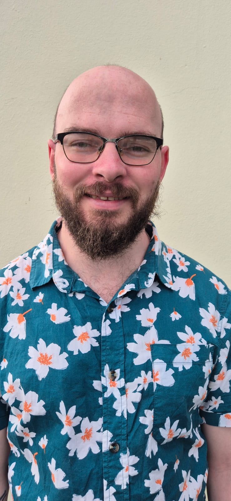

01 / Profile
Software Engineer with 6 years of commercial experience designing and developing full-stack applications, infrastructure automation tools, and network management systems. Experienced across Python, Vue.js, Django, Flask, Linux infrastructure, networking, and observability platforms. Passionate about building reliable software that simplifies operational workflows and supports real-world infrastructure deployments.
02 / Skills
03 / Experience
04 / Highlights
Designed and deployed a VLAN-segmented MikroTik network to provide connectivity for SAICA's final board exams, serving roughly 4,000 concurrent users across multiple exam halls from a single uplink device. Each hall ran a daisy-chained ring topology, so a single device failure would fail over automatically instead of taking the hall offline.
Diagnosed a failed SSD stuck in read-only mode on a remote site device in Kruger National Park. Used MikroTik Ethernet over IP to stand up a temporary virtual replacement on our server, keeping Wi-Fi analytics collection running until a replacement SSD could be physically installed on site.
A streaming and conference platform built during our pivot in COVID-19, aimed at helping companies bring their physical events online during the lockdowns.
A custom booking website integrating with Nightsbridge to allow our sister company (Untether) to let clients book their stays.